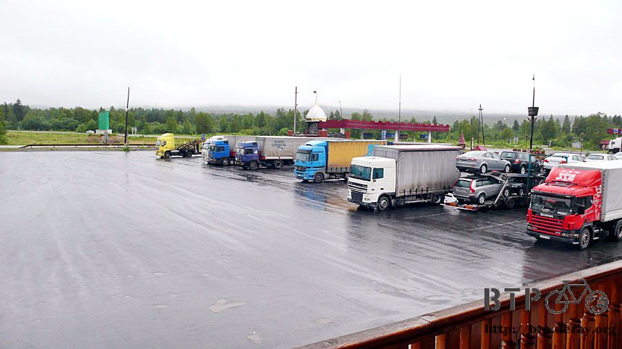
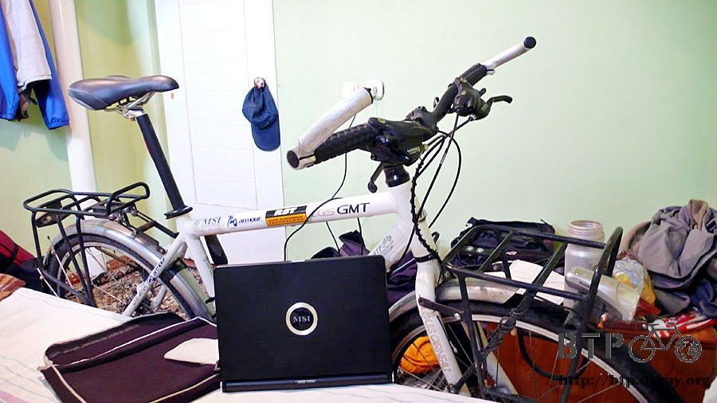

老天不讓我出去玩
多虧房間的暖氣系統，睡在這小小的房間裡很舒適，都快忘記外面有多濕冷。
睡覺的時候雙手握著熱水流過的暖氣鐵管子，手心很溫暖，睡得格外安穩。
睡前由衷的祈禱明天是好天氣，五點半起床時窗外依然是一片雨霧飄邈，和昨天一樣鳥的天氣。
和心中期盼看到的藍天白雲落差很大，躺回床上繼續蒙頭大睡，每一小時起床看一次雨勢，心中還是默默祈盼著放晴的可能。
睡到九點，走到二樓陽台往外看，冰冷的風吹的瞌睡蟲全部跑光光，陰霾的天空依舊下著雨，沒有放晴的跡象。

不想再淋雨騎車了，實在太辛苦也很澆熄旅行的熱忱，反正現在超前預排的進度兩天，可以休息一日沒有影響。
旅館的電力時有時無，廁所、廚房、大廳、走道，到處都擺了白色的蠟燭，以因應隨時中斷的照明。
拿著四百盧布到樓下大廳準備續住一晚，這邊的房價和旅館的設施衡量之下算是很便宜了。
房間有暖氣、可以洗熱水澡、樓下也有餐廳、房間乾淨又舒適，除了員工堅持不讓小多放進房裡，能夠找到這間旅館還挺幸運的。
大廳空盪沒有人，探頭到休息室裡面看，那個難搞的員工正在和另一個員工聊天，同房間裡還有我的小多。
我說想再多住一天，將錢交給對方，然後再度問了將小多牽到房裡放的事情，此時記得要面帶微笑。
微笑很重要，這只是他對於工作上原則的堅持，寧可自己跟腳踏車同睡一晚也不讓我放進房裡，並不是要刁難我，沒有必要惡言相向。
加上這一次，至少問了有三十次了，同時配合另外一個員工的勸說，難搞的他好不容易退讓了，小多終於得以跟我同住一間房，不用擔心會被賣掉了。

我鞠躬向兩個人道謝，難搞的員工還說不要謝謝他，這不是他的意思，是另外一個人答應的，跟他沒關係，真是非常有原則的一個人。
餐廳在一樓，旅館在二樓，早上十點多住宿的人都退房了，房間門都是打開的，自己隨意參觀了其他的房間。
除了我這一間是單人房之外，其他都是雙人以上的房間，也有豪華型的，光是廁所就比我這間房還要大，四百元能住在這裡也算不錯了。

搞定了小多和續住的事情，拿著水壺再去餐廳報到，這次裝了一大杯的熱咖啡，早餐就配著之前買的胡桃蛋糕吃。
今天除了休息之外，也想再度整理一下零散的行李，多花點時間研究地圖，同時把衣服也洗一下。
還不到中午電力就再度中斷，連帶影響的是暖氣系統也沒了，裹著棉被研究地圖，俄羅斯之旅真是和我想像的大不相同。
本來以為會遇到一張一張板著的面孔，天天都做了碰壁的心理準備，但其實友善的人處處都有。
生活在共產國家，並不代表人就會變得很難搞，需要調整的是我自己的心態和應對的方式，在這邊，我才是外國人，而且我才是那個舉止奇怪、格格不入的人。
拿著地圖坐在餐廳研究，中午想吃點東西，但停電的影響連廚房都無法使用，只剩下溫開水泡的咖啡和涼掉的肉餡餅可以吃。
地圖越看越覺得傷腦筋，兩天後騎到烏法，會進入抉擇點，要選擇M5道路還是M7道路。
一旦選了就不能後悔，M5比較多平路，但是路線兜了一個圈，不是直線往莫斯科移動，M7則是很多山路，但騎乘總距離比較短。
邊吃東西邊研究，順便問餐廳其他員工的意見，最後決定走M7這條路，爬山是沒關係，只要別下雨就好了，前提還是希望老天爺能快點放晴。
回到房間開始檢查包包受潮的情形，之前淋雨都是將包包拉鍊全部打開放一晚上就當搞定，並沒有太仔細去處理。
昨天在暖和的房間裡放了一個晚上的包包，裡頭的東西依然潮濕，用肉眼就能清楚的看見小水珠在東西上頭，包包裡的乾淨衣服摸起來也是濕的。
米散送我的簽名衣服，粉筆寫的字跡已經因為潮濕而看不見；裝著氣化爐的紙盒子也因為潮濕而變得軟趴趴，還飄著霉味。
因為懶得打開防水袋，讓包包淋雨所付出的代價超乎我的想像，花好一番功夫將所有的東西都拿出來晾乾。
房間本來就不大，所有的東西擺滿了整個地上、床上和桌上，潮濕的衣服輪流晾在暖氣的管子上。
睡袋也怕受潮而打開來透氣，整個房間非常雜亂，走路都要踮著腳尖才有辦法通行。
幸好今天沒有再騎車，不然這些行李不知道會濕成什麼地步？
忙了好一陣子，電力終於恢復供應，快點跑去餐廳吃熱食。
肚子不是很餓，所以只點了熱湯來喝，酸酸的湯裡頭料很豐富，火腿、臘肉、馬鈴薯、酸黃瓜跟一堆東西，配著一條一元的麵包當成午餐。
行李因為下雨而受潮，我在雨中騎了一整天的車，又吹著冷冰冰的風，頭有點昏沉，但還不到感冒這麼糟糕。
繼續泡一大杯的熱檸檬紅茶回房間休息，地圖研究已經告一段落，接下來只要去騎就可以了，既然沒別的事可以做，那就睡覺養足精神吧。
繼續閱讀：7.25 又見藍天
俄羅斯-盧布－ 1：1.3 台幣
7.24 |
總計：530元 |
早餐咖啡20元、點心咖啡、三角肉餅50元、午餐馬鈴薯火腿酸湯、麵包50元、檸檬紅茶10元、旅館400元 |
|